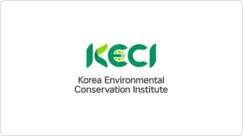

알림홍보
작은 실천들이 함께 모여! 우리의 환경을 보호합니다.
언론보도
전체 1,310 건
현재 페이지 1/1,000
-

- [조선일보] 환경보전협회, 한국수자원공사·한국환경공단 등과 함께 제44회 국제환경산업기술·그린에너지전 개최('23.6.8.)
-
- [국토일보] 'ICT 활용 수변구역 매수토지 관리 고도화' 세미나 성료('23.6.8.)
-
- [디지털비즈온] 제44회 국제환경산업기술·그린에너지전 개막('23.6.8.)
-
- [천지일보] 제44회 국제환경산업기술·그린에너지전 개막('23.6.7.)
-
- [동아일보] 공무원-학생에 환경 교육 등 공공성 강화('23.6.5.)
-
- [신아일보] 즐겁게 배우고 나누는 환경…5~11일 '환경교육 주간'('23.6.2.)
-
- [데일리환경] 환경보전협회, 1회용품 제로 챌린지로 긍정적인 영향력 전파 中('23.5.22.)
-
- [국토일보] 환경보전협회, 생태계 교란식물 집중 제거 활동('23.5.11.)
-
- [천지일보] 환경보전협회, 수풀로 삼회리 생태계교란식물 집중 제거('23.5.10.)